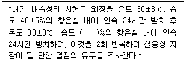
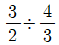
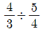
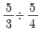
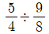
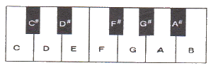

피아노조율기능사 (2010-01-31 기출문제)
1과목: 임의 구분
1. 피아노 부품 명칭과 사용되는 나무의 재질을 올바르게 연결한 것은?
- 핀판 – 고로쇠, 나도박
- 향판 – 단풍나무, 자작나무
- 향봉 – 고로쇠, 구루미
- 브리지 – 스프루스, 가문비나무
(정답률: 알수없음)

2. 히치핀과 장브리지 사이에 보조브리지를 넣어서 배음의 울림을 얻게 하는 장치는?
- 소프트브리지
- 커트브리지
- 서스펜딩브리지
- 아리콧트브리지
(정답률: 알수없음)
3. 피아노 건반의 상승 및 하강하중(N)은 얼마인가?
- 상승하중 : 2.40 ~ 4.70, 하강하중 : 4.70 ~ 5.60
- 상승하중 : 0.39 ~ 0.74, 하강하중 : 0.098 ~ 0.39
- 상승하중 : 0.020 ~ 0.50, 하강하중 : 0.50 ~ 0.94
- 상승하중 : 0.098 ~ 0.39, 하강하중 : 0.39 ~ 0.74
(정답률: 59%)
4. 다음은 피아노의 내건 내습성 시험에 대한 내용이다. ( ) 안에 알맞은 수치는?

- 20±5
- 40±5
- 60±5
- 80±5
(정답률: 55%)
5. 끊어진 현을 교환하고자 지름을 재어보니 0.8752mm 이었다. 몇 번 현으로 교환하는 것이 가장 바람직한가?
- 13번
- 15번
- 18번
- 19번
(정답률: 73%)
6. 다음 중 피아노 액션 부품만으로 구성된 것은?
- 캐쳐, 받드, 백첵, 위펜
- 캐쳐, 밸런스핀, 백첵, 위펜
- 캐쳐, 밸런스핀, 댐퍼, 위펜
- 캐쳐, 캐스터, 백첵, 위펜
(정답률: 알수없음)
7. 다음 중 피아노 외장(case)에 사용되는 도료가 아닌 것은?
- 래커
- 폴리우레탄
- 호마이카
- 아세톤
(정답률: 67%)
8. 피아노의 조화장치(harmonic trap)에 대하여 가장 옳게 설명한 것은?
- 향판의 가장자리 쪽으로 가면서 차츰 굵게 또는 가늘게 만드는 장치
- 철골 구조상 중고음부의 힘살대 부분을 따내어 음의 전달 상태나 음향의 불균형을 향봉으로 강화하는 장치
- 향판의 울림에 큰 도움이 되지 않는 상하 모퉁이에 딱딱한 재질의 목재를 부착시켜 불필요한 진동을 없애는 장치
- 철골의 힘살대를 피하기 위하여 브리지 상단면을 약간 도려내어 제작하는 장치
(정답률: 알수없음)
9. 업라이트 피아노의 해머레일을 현 쪽으로 움직여 해머와 현의 거리가 가깝게 됨에 따라 타현거리가 줄어들어 여린 음을 내게 하는 역할을 하는 페달은?
- 댐퍼 페달
- 약음 페달
- 소프트 페달
- 소스테누토 페달
(정답률: 90%)
10. 피아노선 규격 중 18번선의 인장강도(N/mm2)는 얼마인가?
- 2310 ~ 2470
- 2280 ~ 2450
- 2240 ~ 2390
- 2200 ~ 2360
(정답률: 67%)
11. 피아노 A1음에서 옥타브 화음을 몇 번 상행하면 완전5도 화음을 12번 계속한 지점에서 만나는가?
- 4번
- 5번
- 7번
- 9번
(정답률: 75%)
12. 음속은 상온에서 보다 기온이 차츰 높아질수록 어떤 변화가 있는가?
- 점점 느려진다.
- 점점 빨라진다.
- 기온에 관계없이 일정하다.
- 급속히 느려진다.
(정답률: 91%)
13. 다음 중 정음 작업을 할 때 가장 적합한 공구는?
- 해머 아이론
- 키 플라이어
- 생크 플라이어
- 레큐레이팅 스크류 드라이버
(정답률: 알수없음)
14. 맥놀이(Beat)가 발생하는 이유는 주로 음의 어떤 성질에 의한 것인가?
- 회절
- 간섭
- 반사
- 굴절
(정답률: 90%)
15. 건물 건너편에서 발생한 소리가 그 지점은 보이지 않는데 건물을 돌아서 들려오는 현상과 관계있는 것은?
- 회절
- 흡수
- 반사
- 잔향
(정답률: 알수없음)
16. 순음에 대한 설명으로 옳은 것은?
- 음색의 차이를 감별할 수 있다.
- 강약과 고저의 성질을 가지지 않는다.
- 파형은 완전한 사인 곡선(sine curve)을 그린다.
- 일반적으로 보통의 악기에서 순음이 자주 일어난다.
(정답률: 80%)
17. 액션 해머펠트의 경도가 높을 때의 처리 방법은?
- 해머펠트에 물을 묻혀 부풀린다.
- 피커(picker)로 해머펠트를 알맞게 찔러준다.
- 해머펠트를 샌드페이퍼로 알맞게 문지른다.
- 해머펠트에 경화제를 알맞게 바른다.
(정답률: 80%)
18. 20폰[phon]에 대하여 옳게 설명한 것은?
- 등감곡선에서 1Hz 순음의 음압레벨이 20dB
- 등감곡선에서 10Hz 순음의 음압레벨이 20dB
- 등감곡선에서 100Hz 순음의 음압레벨이 20dB
- 등감곡선에서 1000Hz 순음의 음압레벨이 20dB
(정답률: 72%)
19. 피아노의 음색에 대한 설명으로 틀린 것은?
- 음색의 변화를 결정하는 주요소는 현징동 파형의 변화를 일으키는 것이다.
- 부분음이 없거나 2~3개의 낮은 배음을 수반하는 음은 음색에 힘이 있고 날카로운 느낌이든다.
- 높은 부분음을 수반하면 화려한 느낌이 든다.
- 불협화의 부분음들이 수반하는 음색은 거칠다는 느낌을 준다.
(정답률: 84%)
20. 흡음처리에 대한 설명으로 틀린 것은?
- 에코를 방지하기 위해 꼭 흡음처리를 해야 할 경우 흡음율을 미리 정한다.
- 확성장치 때문에 마이크를 사용할 경우 그 주변을 되도록 흡음성으로 한다.
- 일반적으로 낮은 주파수는 흡음율이 크고, 고음역에서는 흡음율이 작다.
- 같은 재질일 경우 흡음재료가 두꺼워질수록 음의흡수가 잘 된다.
(정답률: 알수없음)
2과목: 임의 구분
21. 다음 중 정상인 귀의 최소가청치와 임의의 귀의 최소가청치와의 비를 dB로 나타낸 것은?
- 트랩워크
- 도플러 효과
- 마스킹 효과
- 히어링 로스
(정답률: 92%)
22. 다음 중 흑연칠을 해서 안되는곳은?
- 댐퍼 레버 클로스
- 캐쳐 스킨
- 잭의 상단
- 잭이 레큐레이팅 버튼과 접촉하는 자리
(정답률: 75%)
23. 신토닉 콤마에 대하여 옳게 설명한 것은?
- 신토닉 콤마 값은 74/73 이다.
- 24센트의 오차를 말한다.
- 피타고라스 음율의 장3도와 순정 장3도의 차이를 말한다.
- 피타고라스 콤마 라고도 한다.
(정답률: 알수없음)
24. A49의 진동수가 440Hz일 경우, G#48의 진동수는 얼마인가?
- 411.350Hz
- 414.3⑤Hz
- 415.3⑤Hz
- 466.164Hz
(정답률: 알수없음)
25. 평균율에서 A49가 10센트 높다고 하면 몇 Hz 가 되는가? (단, A49의 진동수는 440Hz이다.)
- 440.616
- 441.616
- 442.616
- 443.616
(정답률: 80%)
26. 순정률에서 작은 온음을 구하는 방법으로 옳은 것은?




(정답률: 알수없음)
27. 어떤 진동의 배음은 정수배가 되어 나타나야 하는데, 실제로 피아노의 현을 진동시킬 때 이러한 규칙대로 배음이 발생하지 않는다. 이 현상의 주요 원인은 현의 경직성(stiffness) 때문인데 이러한 배음 주파수의 편차를 무엇이라 하는가?
- 하모니시티(harmonicity)
- 인하모니시티(inharmonicity)
- 부분음(partial harmonnic)
- 인터프런스(interference)
(정답률: 알수없음)
28. A37와 G#36의 진동수 차는 얼마인가? (단, A37의 진동수는 220Hz 이다.)
- 12.348
- 15.348
- 24.348
- 48.348
(정답률: 알수없음)
29. 연주용 피아노 조율시 유의사항으로 옳지 않은 것은?
- 피치 변경은 적어도 연주 전날 행한다.
- 연주 직전 조정, 정음은 피한다.
- 당일 조율은 특별히 정성들여 행하고 테스트블로우는 평소보다 약하게 해야 한다.
- 페달 기능을 더욱 철저히 검사한다.
(정답률: 알수없음)
30. G#36(207.652Hz)와 C#41(277.183Hz)의 두 음정간의 맥놀이(beat)수는 약 얼마인가?
- 0.71
- 0.94
- 1.71
- 10.69
(정답률: 50%)
31. 여러 개의 음을 일정한 규칙에 따라 시간적, 미적으로 연속 배열한 것을 무엇이라고 하는가?
- 하모니
- 맵시
- 복합음
- 멜로디
(정답률: 알수없음)
32. 귀의 구조 중 등자뼈는 어느 부분에 해당하는가?
- 내이
- 외이
- 중이
- 귓바퀴
(정답률: 82%)
33. 다음 한 옥타브(octave)의 피아노 건반에서 E음에 대하여 상행 장3도의 음은 무엇인가?

- F#
- G#
- A#
- B
(정답률: 92%)
34. 2배음에 대하여 가장 옳게 설명한 것은?
- 현이 진동할 때 고음이 나기도 하고 저음이 나기도 하는 음
- 기음에 대하여 한 옥타브 윗음이 나는 음
- 기음에 대하여 한 옥타브 아래음이 나는 음
- 기음에 대하여 반 음정 높게 나는 음
(정답률: 알수없음)
35. 다음 중 안어울림 음정에 해당되지 않는 것은?
- 장2도
- 장7도
- 단7도
- 단3도
(정답률: 92%)
36. 페달기구 수리에 관한 사항 중 옳지 않은 것은?
- 페달 밑에 쿠숀펠트를 붙일 때에는 운동거리를 감안해서 적당한 두께로 붙인다.
- 페달봉이 후레임에 닿아 잡음이 날 경우에는 페달봉을 약간 휘고 후레임에 펠트를 붙여 작업한다.
- 페달이 토대목 옆면에 닿아 잡음이 날 경우에는 토대목 옆면을 갈아 주거나 클로스나 스킨 등을 붙이고 흑연을 칠해 준다.
- 페달 스프링에서 잡음이 날 경우에는 스프링을 교체해서 처맇하는 방법밖에 없다.
(정답률: 82%)
37. 댐퍼 페달 및 댐퍼 페달의 조정 방법에 대한 설명으로 옳은 것은?
- 페달의 운동량이 많을 때에는 페달의 나비너트를 조금 풀어 준다.
- 댐퍼가 현으로부터 떨어지는 거리는 건반을 눌렀을 경우보다 1.5배 정도 많이 가게 한다.
- 댐퍼 페달은 약간의 로스트 모션(lost motion)을 주어야 한다.
- 댐퍼 페달을 우나코다 페달이라고 한다.
(정답률: 알수없음)
38. 페달 브래킷(목재)의 수리 방법으로 가장 옳은 것은?
- 고정된 상태에서 나사못을 조여 준다.
- 분해하지 않고 접착제를 칠한 후 나사못을 조여 준다.
- 분해한 후 필요한 부분을 수리하고 나사못만 조여 준다.
- 분해한 후 필요한 부분을 수리하고 접착제를 브래킷 밑면에 칠하고 나사못을 조여 준다.
(정답률: 84%)
39. 전체적으로 현을 풀 때 한 음씩 건너가며 현을 풀어야 하는 주된 이유는?
- 향판과 브리지를 보호하기 위하여
- 후레임 장력의 편중으로 인한 파손을 방지하기 위하여
- 단선을 방지하기 위하여
- 지주의 보호를 위하여
(정답률: 알수없음)
40. 머플러 페달에 대한 설명으로 옳은 것은?
- 가장 오른쪽에 있는 페달로서이 페달을 밟으면 댐퍼 리프트레일이 올려져서 전체 댐퍼가 동시에 현에서 개방된다.
- 가장 왼쪽에 있는 페달로 피아노 음을 아주 강하게 하는 장치이다.
- 해머의 마모를 방지하기 위한 장치이므로 펠트 위를 해머가 타격할 수 있게 한다.
- 소리의 크기를 줄여주기 위한 장치이므로 해머가 펠트 위를 타격할 수 있게 한다.
(정답률: 알수없음)
3과목: 임의 구분
41. 휘어진 건반 수리는 어떤 방법이 가장 적당한가?
- 건반 밑면을 대패질하여 깍아준다.
- 나무의 진이 나오도록 열을 가해 잡아준다.
- 전체적으로 물을 흠뻑 묻힌 다음 열을 가해 잡아준다.
- 후론트 핀을 굵은 것으로 교홚한다.
(정답률: 알수없음)
42. 건반조정을 할 때 사용하는 공구가 아닌 것은?
- 키 플라이어
- 딥블럭
- 잭 스크류 드라이버
- 건반고르기 자
(정답률: 85%)
43. 업라이트 피아노의 받드 펠트(butt felt)에 대한 설명으로 틀린 것은?
- 받드 펠트 접착시 받드 스킨 쪽은 접착제를 칠하지 않는다.
- 같은 속도로 타건할 때 받드 펠트가 얇으면 타현속도가 느리고 두꺼우면 빠르다.
- 펠트가 얇으면 렛오프(let off)시 받드 스킨의 마찰이 크다.
- 스킨 쪽에 접착제가 묻으면 잭과의 사이에 잡음을 일으킨다.
(정답률: 59%)
44. 다음 중 페달에서 잡음이 가장 적게 나는 곳은?
- 스프링
- 페달봉
- 나비너트
- 레버받침목
(정답률: 알수없음)
45. 갈라진 향판의 수리 방법으로 가장 적절한 것은? (단, 철골을 그대로 둔 경우이다.)
- 함수율을 높여 자연스럽게 연결될 수 있도록 한다.
- 갈라진 틈을 목분과 접착제를 혼합하여 메운다.
- 갈라진 틈을 향판보다 단단한 목재 쐐기를 만들어 접착제를 묻혀 밀어 넣는다.
- 갈라진 틈을 향판과 같은 종류의 목재 쐐기에 접착제를 묻혀 밀어 넣고 다듬질한다.
(정답률: 알수없음)
46. 댐퍼 스푼을 매끈하게 하는데 필요한 작업과 가장 거리가 먼 것은?
- 부드러운 가죽을 붙인다.
- 황동 연마제로 닦아낸다.
- 실리콘을 칠한다.
- 스틸울(철면)로 닦아낸다.
(정답률: 알수없음)
47. 애프터 터치의 양에 대한 설명으로 옳은 것은?
- 건반 깊이와 타현거리에 비례한다.
- 건반 깊이와 타현거리에 반비례한다.
- 건반 깊이에 반비례하고 타현거리에 비례한다.
- 건반 깊이에 비례하고 타현거리에 반비례한다.
(정답률: 알수없음)
48. 튜닝핀에 대한 설명으로 옳지 않은 것은?
- 튜닝핀에 길이는 64mm 이하로 한다.
- 튜닝핀의 지름은 6.75 ~ 7.25mm 이다.
- 튜닝핀이 박히는 부분에는 40 ~ 45mm의 나사산을 가공해야 한다.
- 튜닝핀의 머리부는 사각형으로 하고 10/100 ~ 14/100 의 테이퍼를 붙여야 한다.
(정답률: 알수없음)
49. 건반의 높이 및 깊이에 관한 설명으로 틀린 것은?
- 딥블럭(deep blcok)으로 건반깊이를 측정한다.
- 건반대에서 흑건반 위까지의 높이는 약 64mm 이다.
- 건반의 높이는 10±0.5mm 정도이다.
- 흑건은 누른 상태에서 백건 위로 2mm 정도 올라와야 한다.
(정답률: 72%)
50. 댐퍼 레버 수리작업에 관한 사항 중 옳지 않은 것은?
- 댐퍼 블록이 떨어졌을 때는 액션을 떼지 않고 접착하는 것이 쉽다.
- 댐퍼 레버 클로스를 접착할 경우에는 접착제를 전체 면에 칠한 후 접착한다.
- 댐퍼 펠트가 굳어져 지음이 되지 않을 경우에는 굳어진 부분을 부드럽게 해준다.
- 댐퍼 플랜지 센터핀이 헐거울 경우 센터핀을 1단계 굵은 것으로 교환한다.
(정답률: 34%)
51. 댐퍼(Damper)에서 지음이 잘 되지 않을 때의 원인이 아닌 것은?
- 댐퍼 펠트 접촉면의 앞뒤 중 한쪽이 떠 있을 때
- 댐퍼 레버 플랜지의 동작이 둔할 때
- 댐퍼 레버 클로스가 굳어져 있을 때
- 댐퍼 와이어의 각이 변했을 때
(정답률: 46%)
52. 업라이트 피아노에서 댐퍼 페달은 어떻게 조정해야 하는가?
- 댐퍼가 현에서 2mm 정도 떨어지게 조정한다.
- 댐퍼 스톱 레일에 닿게 조정한다.
- 건반을 눌렀을 때 댐퍼가 떨어지는 거리와 같게 조정한다.
- 댐퍼가 현에서 0.2mm 정도 떨어지게 조정한다.
(정답률: 73%)
53. 다음 중 건반 부분에서 잡음이 가장 많이 발생하는 원인에 해당되는 것은?
- 부싱 클로스가 마모 또는 경화되어서
- 부싱이 빡빡해져서
- 납이 너무 무거워서
- 부싱 클로스가 두꺼웟
(정답률: 80%)
54. 해머접근은 어느 정도로 조정해야 하는가?
- 저음 1.5~2mm, 중음 2~2.5mm, 고음 1.5~2mm
- 저음 2~2.5mm, 중음 1.5~2mm, 고음 2.5~3mm
- 저음 2.5~3mm, 중음 1.5~3mm, 고음 2~2.5mm
- 저음 2.5~3mm, 중음 2~2.5mm, 고음 1.5~2mm
(정답률: 알수없음)
55. 잭 플랜지 센터핀이 너무 빡빡할 때의 수리방법으로 틀린 것은?
- 센터핀 부싱에 윤활유를 주입한다.
- 센터핀 부싱을 넓혀준다.
- 부싱의 습기를 없애준다.
- 가는 핀으로 바꿔준다.
(정답률: 알수없음)
56. 음향판에서 잡음이 발생하는 원인이 아닌 것은?
- 향판에 접착된 브리지가 떨어져 있을 경우
- 향판과 향봉이 떨어져 있을 경우
- 향판이 갈라져 있을 경우
- 향판의 크라운이 가라앉아 있을 경우
(정답률: 알수없음)
57. 다음 중 백건 수리 방법으로 옳지 않은 것은?
- 떨어진 백건을 붙일 때는 크로륨을 사용한다.
- 백건 접착시 기존의 접착제 찌꺼기를 깨끗이 제거한다.
- 백건 접착시 공업용 본드를 사용한다.
- 백건 접착 후 흑건과 접촉 부분은 줄로 갈아낸다.
(정답률: 알수없음)
58. 업라이트 피아노의 댐퍼 와이어를 구부리는데 주로 사용하는 공구는?
- 스푼 어드자스터
- 댐퍼 와이어 벤더
- 와이어 리프터
- 해머 아이론
(정답률: 80%)
59. 애프터 터치에 관한 설명으로 옳은 것은?
- 렛오프가 된 상태에서 건반이 약간 더 내려갈 수 있는 상태를 말한다.
- 해머 접근 및 해머 스톱을 모두 애프터 터치라고 한다.
- 해머가 타현 후 해머 스톱될 때 느끼는 감각을 애트터 터치라고 한다.
- 건반을 반쯤 눌렀을 때 댐퍼의 중량감을 느끼는 감각을 애프터 터치라고 한다.
(정답률: 알수없음)
60. 타건이 잘 되지 않을 때의 원인이 아닌 것은?
- 건반 동작이 원활하지 않을 경우
- 위펜 플랜지의 동작이 원활하지 않을 경우
- 받드 플랜지의 동작이 원활하지 않을 경우
- 댐퍼 레버 플랜지의 동작이 원활하지 않을 경우
(정답률: 82%)